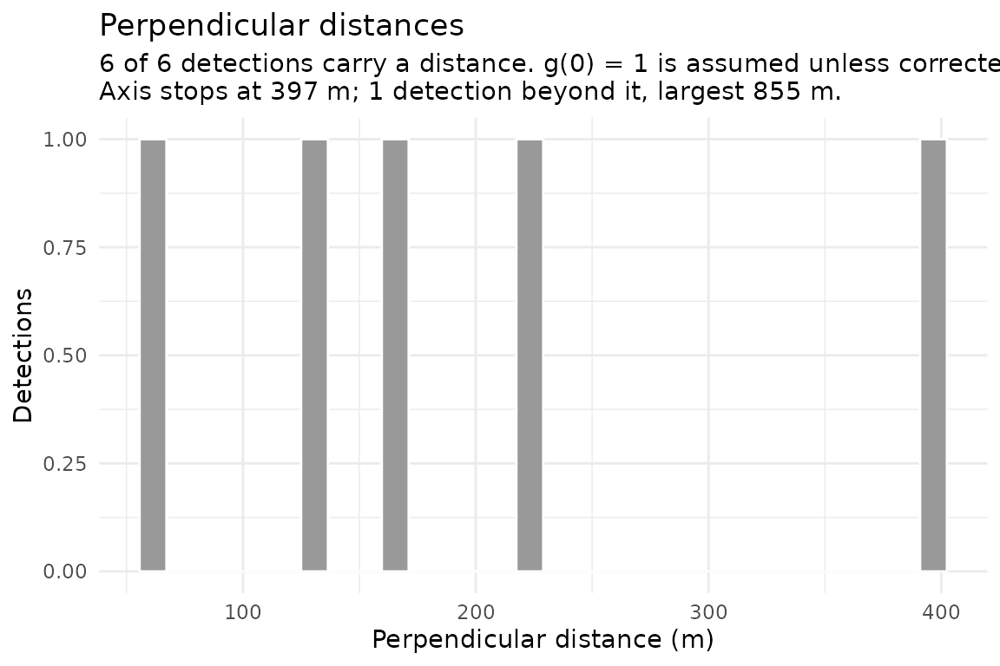

From segments to a density surface
Source:vignettes/from-segments-to-density.Rmd
from-segments-to-density.Rmddistsamp stops at segments. This vignette starts where
vignette("segmenting-narwc-data") ends and passes the
output to Distance and dsm. The two places
this handoff usually goes wrong are units and the key between segments
and detections.
The Distance and dsm chunks are not
evaluated. Neither package is a dependency of
distsamp, so the vignette builds without them. The code
runs once they are installed.
The data is synthetic.
narwc-example.csv is generated by
data-raw/make-fixture.R. No real NARWC records are
distributed with the package or were used to develop it. The fixture has
two days, seven tracks, and a few sightings: far too few to fit a
detection function or a density surface. The numbers below show the
mechanics only; none is a result.
Segment the survey
path <- system.file("extdata", "narwc-example.csv", package = "distsamp")
dat <- read_narwc(path)
#> `read_narwc()` renamed 2 columns:
#> LAT_DD -> LATITUDE
#> LONG_DD -> LONGITUDE
#> All matched an exact entry in the alias table; `narwc_column_mapping()` returns this, and `quiet = TRUE` silences it.
segs <- segment_survey(dat, seg_length = 5, seed = 1, species = "RIWH")
segs
#> <distsamp_segments>
#> segments: 20
#> tracks: 7
#> total effort: 92.23 km
#> segment length: median 4.44 km, range 2.22-7.78 km
#> target length: 5 km seed: 1
#> species: RIWH
#> detections: 6 (6 with a perpendicular distance, m)Two tables are used here.
segments holds the sampling units, one
row each, with effort and a location:
head(segs$segments[, c("seg_id", "seg_eff", "mid_lat", "mid_lon", "wt_beaufort")])
#> # A tibble: 6 × 5
#> seg_id seg_eff mid_lat mid_lon wt_beaufort
#> <chr> <dbl> <dbl> <dbl> <dbl>
#> 1 2024-04-01_2_1 7.78 43.0 -69 2
#> 2 2024-04-01_2_2 5.56 43.1 -69 2
#> 3 2024-04-01_2_3 3.33 43.1 -69 2
#> 4 2024-04-01_2_4 5.56 43.2 -69 2
#> 5 2024-04-01_4_1 4.44 43.3 -69.1 2
#> 6 2024-04-01_4_2 3.33 43.3 -69.1 2detections holds one row per sighting,
with its perpendicular distance:
segs$detections[, c("seg_id", "SPECCODE", "size", "distance", "side")]
#> # A tibble: 6 × 5
#> seg_id SPECCODE size distance side
#> <chr> <chr> <dbl> <dbl> <chr>
#> 1 2024-04-01_2_1 RIWH 1 229 right
#> 2 2024-04-01_2_2 RIWH 2 132. left
#> 3 2024-04-01_2_2 RIWH 1 397. right
#> 4 2024-04-01_4_2 RIWH 3 61.4 left
#> 5 2024-04-01_4_2 RIWH 2 855. right
#> 6 2024-04-02_1_3 RIWH 4 160. leftseg_id is the key between them. Every detection belongs
to exactly one segment, and that segment carries the effort the
detection was made on.
Match the units
Mismatched units are the most common way to get a density estimate wrong by a factor of 1000.
c(effort = "km", distance = segs$settings$distance_units)
#> effort distance
#> "km" "m"seg_eff is in kilometres, because
effort accumulates in km. distance defaults to
metres, because ALT is in metres (handbook
8.A.1) and aerial cetacean surveys conventionally report perpendicular
distances in metres.
There are two options. Work in kilometres throughout:
segs_km <- segment_survey(dat, seg_length = 5, seed = 1, species = "RIWH",
distance_units = "km")
segs_km$detections$distance
#> [1] 0.22900000 0.13221321 0.39663963 0.06136037 0.85463963 0.16034753Or keep metres and pass a conversion factor to Distance
as convert_units. For distance in m, effort in km, and area
in km², the factor is:
# distance in m, effort in km, area in km^2: m -> km
convert_units <- 0.001The same factor goes to dsm() as
convert.units. State the choice in your methods.
Plot the distances
Look at the distribution before fitting a curve to it.
plot(segs, what = "distances")
Expect a shoulder near zero and a tail that falls away. What you see changes what you fit:
-
A dip in the first bin may not be a sampling
artefact. An aircraft cannot see the water directly beneath it. For the
Skymaster, handbook 8.A.31 says CETAP-era distances “are actually
measured from about 1/8 mile to either side of the survey line”. Use
left truncation,
ds(left = ...); do not assume the animals were absent. -
A peak away from zero is what the gamma key
function describes.
Distance::ds()does not offer it (onlyhn,hr, andunif); usemrds::ddf(key = "gamma"). A gamma key and left truncation model the same blind spot, so using both counts it twice. - A long flat tail calls for stronger truncation.
-
A distance the aircraft could not have seen is a
broken record, not a wide detection: a sighting matched to the wrong
segment, or a coordinate with a lost sign. The axis stops at the 99th
percentile so one such value cannot push every real distance into the
first bin. The subtitle reports how many lie beyond it and how large the
largest is. If the largest is too far to be a detection, fix it before
fitting.
?sighting_distancessays where each distance comes from.
The plot says nothing about g(0), the probability of
detecting an animal on the track-line. Animals submerged when the
aircraft passed leave no trace here. A smooth curve is equally
consistent with half of them having been invisible.
Fit a detection function
Distance::ds() takes a data frame with a
distance column and, optionally, size and
detection covariates. detection_data() builds that table,
often called a flatfile:
flat <- detection_data(
segs,
area = 5811, # square km - yours to supply
covariates = "wt_beaufort"
)
#> `detection_data()`: 20 segments, 6 detections (m).
#> g(0) = 1 is assumed; see `?detection_data`.
head(flat)
#> # A tibble: 6 × 9
#> Region.Label Area Sample.Label Effort object distance size distance_source
#> <chr> <dbl> <chr> <dbl> <int> <dbl> <dbl> <chr>
#> 1 all 5811 2024-04-01_2_1 7.78 1 229 1 angle
#> 2 all 5811 2024-04-01_2_2 5.56 2 132. 2 angle
#> 3 all 5811 2024-04-01_2_2 5.56 3 397. 1 angle
#> 4 all 5811 2024-04-01_2_3 3.33 NA NA NA NA
#> 5 all 5811 2024-04-01_2_4 5.56 NA NA NA NA
#> 6 all 5811 2024-04-01_4_1 4.44 NA NA NA NA
#> # ℹ 1 more variable: wt_beaufort <dbl>
library(Distance)
df <- ds(flat, key = "hn", truncation = "10%", formula = ~ wt_beaufort,
convert_units = 0.001) # distances in m, effort in km
summary(df)
plot(df)
gof_ds(df)Points to note:
area is required and has no default. It
scales abundance directly. The scripts this package was rewritten from
had 5,811 km² written into the middle of a function, which is how a
study-area figure outlives its study.
Segments with no detections are in the table, with a missing
distance.
These rows are not padding. They record effort that produced no sightings. Dropping them removes part of the denominator and inflates density.
Use wt_beaufort, not
mean_beaufort. wt_beaufort weights
each record by the distance it covers, so a sea state held over 3 km
counts for more than one recorded over 200 m. Detection depends on that
quantity.
Circling detections are excluded by default, and the
exclusion is reported. A position logged off the track is not measured
at the moment of detection. The animals still count towards the
segment’s abundance, so segs$sightings is unchanged.
Excluding a detection from the detection function while counting it
towards density is normal, and the two are separate arguments:
nrow(detection_data(segs, area = 5811, include_circling = TRUE))
#> `detection_data()`: 20 segments, 6 detections (m).
#> g(0) = 1 is assumed; see `?detection_data`.
#> [1] 22Check the source of each distance. The methods must state it, and point and interval distances cannot be fitted together:
table(flat$distance_source, useNA = "no")
#>
#> angle
#> 6Truncation drops detections, not effort. The
truncation argument of detection_data() drops
detections beyond it and keeps their segments with effort intact:
searched effort counts whether or not anything was seen within the
truncation distance. Pass the same value to ds(). Otherwise
the model is fitted to one set of detections and abundance is scaled by
another.
nrow(detection_data(segs, area = 5811, truncation = 500))
#> `detection_data()`: 20 segments, 5 detections (m).
#> dropped 1 beyond the truncation distance; their segments keep their effort
#> g(0) = 1 is assumed; see `?detection_data`.
#> [1] 21Compare models
Fitting a set of models and choosing the best has two traps.
AIC only compares models fitted to the same data. Changing the truncation changes which detections are in the likelihood, so AICs across truncations are not comparable. Vary key function, adjustments, and covariates at a fixed truncation. Compare truncations separately.
Binned and unbinned fits cannot share a table.
STRIP distances are intervals and are fitted binned. Angle-
and position-derived distances are points. A multi-year model set
therefore splits along that line.
Rank on more than AIC. Abundance depends on the effective strip half-width, and two models within 2 AIC of each other can give materially different values of it. Report (average detection probability) and its CV alongside AIC, with a goodness-of-fit statistic.
docs/07-fitting-architecture.md in the package
repository covers this, where an automated model-selection sweep
belongs, and what can and cannot be done about g(0).
Project the coordinates
mid_lon/mid_lat are decimal degrees. A
smooth of longitude and latitude in degrees distorts distance at NARWC
latitudes: at 43°N a degree of longitude is about 81 km, against 111 km
for a degree of latitude. Project to an equal-area projection before
modelling:
pts <- segments_as_sf(segs, "midpoints")
# Albers equal-area, Gulf of Maine
gom_aea <- paste(
"+proj=aea +lat_1=40 +lat_2=46 +lat_0=43 +lon_0=-69",
"+x_0=0 +y_0=0 +datum=WGS84 +units=km +no_defs"
)
projected <- sf::st_transform(pts, gom_aea)
xy <- sf::st_coordinates(projected)
head(xy)
#> X Y
#> [1,] 0.000000 3.893573
#> [2,] 0.000000 10.568327
#> [3,] 0.000000 15.018201
#> [4,] 0.000000 19.468104
#> [5,] -8.107262 30.041539
#> [6,] -8.102634 33.935268Build the dsm inputs
dsm needs two data frames with fixed column names. They
map directly from distsamp output:
library(dsm)
segment.data <- data.frame(
Sample.Label = segs$segments$seg_id,
Effort = segs$segments$seg_eff, # km
X = xy[, 1], # projected, km
Y = xy[, 2],
beaufort = segs$segments$wt_beaufort
)
# The detections the detection function was actually fitted to, after
# truncation, so `object` matches.
fitted <- df$ddf$data
observation.data <- data.frame(
object = fitted$object,
Sample.Label = fitted$Sample.Label,
size = fitted$size,
distance = fitted$distance
)object is the detection identifier from
detection_data(). dsm uses it to link each
detection to its row in the fitted detection function. Taking the rows
from df$ddf$data keeps the two consistent after
truncation.
Add covariates
distsamp gives each segment a location and nothing else.
Environmental covariates, such as depth, sea surface temperature (SST),
and fronts, must be sampled at each segment midpoint by the user.
segments_as_sf(segs, "midpoints") is the intended
handoff:
pts <- segments_as_sf(segs, "midpoints")
# e.g. with terra
depth <- terra::extract(bathymetry_raster, terra::vect(pts))
segment.data$depth <- depth[, 2]Sample at the midpoint, as Becker et al. (2019) do:
covariates “derived based on the segment’s geographical mid-point”, with
SST and depth standard deviations taken over a 3 × 3-pixel box around
it. segment_midpoints() places the midpoint half the
segment’s effort along the track, not at the centroid of its
records, so it lies on the trackline.
Match covariates in time as well as space. A segment
flown in April needs April’s SST, not the annual mean.
segs$segments$DATE holds the survey date for this.
Fit the density surface model
mod <- dsm(
count ~ s(X, Y, bs = "ts") + s(depth, bs = "ts"),
ddf.obj = df,
segment.data = segment.data,
observation.data = observation.data,
family = tw(), # Tweedie handles the zero inflation
method = "REML",
convert.units = 0.001 # distances in m, effort in km
)
summary(mod)
plot(mod)
gam.check(mod)A Tweedie or negative binomial family is usually appropriate: most segments hold no animals, and the non-zero counts are overdispersed. Miller et al. (2013) discuss the choice.
Report the settings
Record the seed. Without it the segmentation is not
reproducible, and neither is anything downstream.
str(segs$settings)
#> List of 13
#> $ seg_length : num 5
#> $ species : chr "RIWH"
#> $ seed : num 1
#> $ seg_tol_frac : num 0.5
#> $ min_track_km : num 1
#> $ min_segment_km : num 1
#> $ dist_method : chr "haversine"
#> $ circling : chr "same_species"
#> $ circling_distance : chr "with_group"
#> $ circling_max_gap_km: num 5
#> $ distance_units : chr "m"
#> $ platform : chr "aerial"
#> $ distance_sources : chr [1:3] "angle" "exact" "strip"Suggested methods wording is in docs/06-references.md in
the package repository.
References
Becker, E.A., Forney, K.A., Ferguson, M.C., Foley, D.G., Smith, R.C., Barlow, J. and Redfern, J.V. (2010) Comparing California Current cetacean-habitat models developed using in situ and remotely sensed sea surface temperature data. Marine Ecology Progress Series 413:163-183. https://doi.org/10.3354/meps08696
Becker, E.A., Forney, K.A., Redfern, J.V., Barlow, J., Jacox, M.G., Roberts, J.J. and Palacios, D.M. (2019) Predicting cetacean abundance and distribution in a changing climate. Diversity and Distributions 25:626-643. https://doi.org/10.1111/ddi.12867
Hedley, S.L. and Buckland, S.T. (2004) Spatial models for line transect sampling. Journal of Agricultural, Biological, and Environmental Statistics 9:181-199. https://doi.org/10.1198/1085711043578
Miller, D.L., Burt, M.L., Rexstad, E.A. and Thomas, L. (2013) Spatial models for distance sampling data: recent developments and future directions. Methods in Ecology and Evolution 4:1001-1010. https://doi.org/10.1111/2041-210X.12105
Miller, D.L., Rexstad, E., Thomas, L., Marshall, L. and Laake, J.L. (2019) Distance sampling in R. Journal of Statistical Software 89(1):1-28. https://doi.org/10.18637/jss.v089.i01